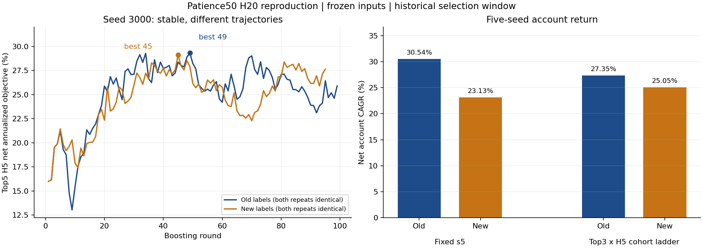

2026-11-06 · 现有“训练目标期限与风格复验 · patience50”的补充阶段 · 未晋升、未修改生产
本页比较两轮H20 patience50，旧组为Nov2标签缓存，新组为统一Nov3标签。这里的“旧组”不是历史v2。两组共用冻结特征、训练日期与权重、早停面板、推理行情和执行配置。

| 输入 | 观测轮数 | 最佳轮 | 目标分数不同轮数 | 树哈希不同轮数 | 验证预测不同条数 | booster文件 |
|---|---|---|---|---|---|---|
| 旧标签 | 99 | 49 | 0 | 0 | 0 | 一致 |
| 新标签 | 95 | 45 | 0 | 0 | 0 | 一致 |
每组都在独立进程中训练两次，原8线程、patience50、上限200轮、同一个seed3000，未引入新的确定性参数。每次验证预测6,483,051条。此结论限于本机、冻结输入和该种子，不外推到所有硬件或所有种子。
5,448,963条训练标签中，106条float32排名值不同；训练索引、164列特征和权重保持一致。两组第5轮开始出现不同目标值，选轮稳定为49与45。相同位置的第5棵树出现WVMA30与SUMN30等不同分裂，前4棵树在验证样本上的叶子路由一致。最终单种子Top3名单有1379/1,448天不同，平均重合41.94%。
新标签复跑与Nov5已保存模型的95轮目标值完全一致，但少数叶值及缺失默认方向不逐位相同。实际验证样本叶子路由变化为0条；预测最大绝对差2.22e-16，Top3/Top5名单变化均为0天。不能把这种位差与旧、新标签之间的实质性头部变化混为一谈。
| 种子 | 历史最佳轮 | 重建最佳轮 | 历史停止轮 | 重建停止轮 | 最佳目标逐位相同 |
|---|---|---|---|---|---|
| 42 | 47 | 47 | 97 | 97 | True |
| 1000 | 59 | 59 | 109 | 109 | True |
| 2000 | 52 | 52 | 102 | 102 | True |
| 3000 | 49 | 49 | 99 | 99 | True |
| 4000 | 106 | 106 | 156 | 156 | True |
第一轮模型已清理，本次按原标签与配方重建，使用预先固定的第一次复跑，不按收益挑重复结果。旧预测文件SHA全部一致：False。SHA不同不能自动等同于数值不一致，也不能冒充历史逐值验证；推理同时用保存的新模型逐年核对既有预测，结果逐值一致。重建旧组s5 CAGR相对历史30.54%的差为0.00 个百分点。
重建旧组模型Top3×H5头部指标与历史摘要完全一致：净年化31.3104%、夏普0.525167。全局RankIC差为2.19e-10，因此不宣称旧预测逐位复原。
| 账户 | 扣费CAGR | 扣费算术年化 | 夏普 | 最大回撤 |
|---|---|---|---|---|
| 旧标签·重建 / s5 | 30.54% | 30.86% | 1.064 | -33.14% |
| 新标签·保存信号 / s5 | 23.13% | 25.11% | 0.856 | -34.29% |
| 旧标签·重建 / 真阶梯 | 27.35% | 27.56% | 1.060 | -32.69% |
| 新标签·保存信号 / 真阶梯 | 25.05% | 25.68% | 0.997 | -34.43% |
以下差值均为旧组减新组，是否收窄比较绝对值。两组固定s5 CAGR差：7.41 个百分点；真阶梯差：2.30 个百分点。对应账户算术年化差为5.76 个百分点与1.89 个百分点。原模型Top3×H5净算术年化差为1.82 个百分点（238/H5口径）；它与账户CAGR的定义不同，不能直接相减认定缺口修复。
真阶梯固定top3、H5、risk_degree=0.90、100万、原费用与交易限制，允许每日独立到期批次，不调整参数。它对齐选股与名义持有期，但动态本金、实际成交、到期未卖余量及费用仍不同于模型标签组合。s5与阶梯的资金占用机制及持仓集中度也不同，本轮是固定策略整体对照，不能将变化全部归因于持有期。
差距收窄不等于两组均受益：旧组CAGR由30.54%降到27.35%，新组由23.13%升到25.05%。2026年内累计收益则两组均降低（旧14.26%→6.89%，新16.19%→11.07%），最大回撤略减；不能将全窗差距收窄解释为逐年普遍改进。
| 年份 | 旧 / s5 | 新 / s5 | 旧 / 真阶梯 | 新 / 真阶梯 |
|---|---|---|---|---|
| 2020 | -7.92% | -8.27% | 8.39% | 6.31% |
| 2021 | 31.76% | 32.66% | 52.84% | 37.40% |
| 2022 | 22.94% | 9.20% | 12.31% | -0.20% |
| 2023 | 12.95% | 14.07% | 27.48% | 26.15% |
| 2024 | 16.27% | 8.64% | 27.94% | 35.34% |
| 2025 | 109.49% | 72.12% | 37.27% | 42.64% |
| 2026 | 27.09% | 30.97% | 12.73% | 20.78% |
2020和2026为部分年份。2026风格标签全部为T；不能将该年单独解释为D/F检验。本轮不是风格切换组合。
| 账户 | 交易日 | 年内累计收益 | 年内最大回撤 | 夏普 |
|---|---|---|---|---|
| 旧标签·重建 / s5 | 139 | 14.26% | -22.13% | 0.944 |
| 新标签·保存信号 / s5 | 139 | 16.19% | -22.22% | 1.010 |
| 旧标签·重建 / 真阶梯 | 139 | 6.89% | -20.79% | 0.578 |
| 新标签·保存信号 / 真阶梯 | 139 | 11.07% | -20.68% | 0.816 |
同为2026-01-05至2026-07-31的139个交易日；本表累计收益没有年化。
稳定复验支持“标签微扰足以改变该训练轨迹”，不支持“同输入训练不稳定导致这次差距”。整个窗口已经用于早停和历史选型，不是独立样本外。历史v2的原训练输入/环境缺失问题仍单独保留未决。
本补充阶段拟合启动8次，原累计103次，总计111次；没有重跑7H网格。正式harness只核验旧阶段已关闭，现工具不支持同一档案增加新关闭后阶段，本次有限补充账本单列记录，不将其伪装为旧合同成功。